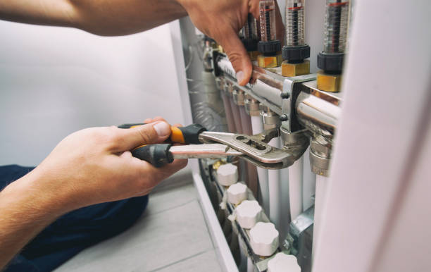

Reviews and Ratings of Top Plumbing Contractors in Frisco
Posted by on 2024-06-07
When it comes to finding top plumbing contractors in Frisco, the process can be as winding and involved as the pipes that run beneath our homes. However, with a vibrant community and an active online presence, Frisco residents have access to a wealth of reviews and ratings that can guide them toward making an informed decision when choosing a plumbing service provider.
In the heart of Texas, where the weather is as unpredictable as a leaky faucet, the importance of having a reliable plumber cannot be overstated. Whether you're dealing with burst pipes due to freezing temperatures or simply need routine maintenance, having access to trustworthy professionals is crucial for homeowners and businesses alike.
The city of Frisco has seen significant growth over the past few years, paving the way for numerous skilled tradespeople to set up shop in this bustling area. With growth comes competition; hence, plumbing contractors are consistently stepping up their game to provide exceptional service. This competitive atmosphere benefits consumers who are looking for quality workmanship at fair prices.
Reviews and ratings play an integral role in distinguishing average plumbers from top-rated experts. Platforms such as Yelp, Google My Business, Angie's List, and HomeAdvisor have become invaluable resources for residents seeking insight into others' experiences with local services. These platforms offer transparent feedback regarding punctuality, professionalism, expertise, customer service, and pricing — all critical factors when determining which contractor is right for your plumbing needs.
Many top-rated plumbing contractors in Frisco pride themselves on their commitment to customer satisfaction. Reviews often highlight prompt responses to emergency situations — a trait particularly appreciated by those who've experienced unexpected water woes. The ability to swiftly address pressing concerns not only mitigates damage but also instills confidence in customers who require immediate assistance.
Ratings frequently reflect how well plumbers communicate with clients throughout the servicing process. From explaining complex issues in layman's terms to providing clear breakdowns of costs before beginning work, communication stands out as one of the pillars upon which reputable plumbing contractors build their reputations.
Another recurrent theme among positive reviews is cleanliness and respect for one's property during repairs or installations. Top plumbers understand that their workspace is someone's home or business and operate accordingly — ensuring minimal disruption and leaving no mess behind upon project completion.
Of course, skill level remains at forefront of client concerns; thus high ratings are often correlated with a contractor’s demonstration of profound knowledge within their field. Mastery over modern techniques alongside adeptness in handling traditional systems marks the distinction between an average job done and excellent service delivered.
Word-of-mouth recommendations continue being influential among Friscans searching for stellar plumbing workmanship; however these anecdotal accounts complement rather than replace objective online evaluations provided by larger communities.
In essence though what truly sets apart highly rated plumbing contractors isn't just proficiency or efficiency – it’s reliability coupled with genuine care towards clients’ needs which fosters lasting relationships beyond mere transactions. It’s this human connection forged through good old-fashioned customer service that resonates deeply within review pages painting pictures of trusted local heroes ready at moment’s notice - wrenches poised valiantly against any watery adversary threatening tranquil domesticity within lovely Frisco homes.
In conclusion while navigating through seas reviews ratings can seem daunting task initial outset armed proper insights gleaned from collective voices fellow citizens quest locate ideal plumber becomes journey empowerment leading directly best possible choice peace mind assurance knowing you’ve enlisted help true professional stand steadfastly beside you facing down drip gush trickle might arise.